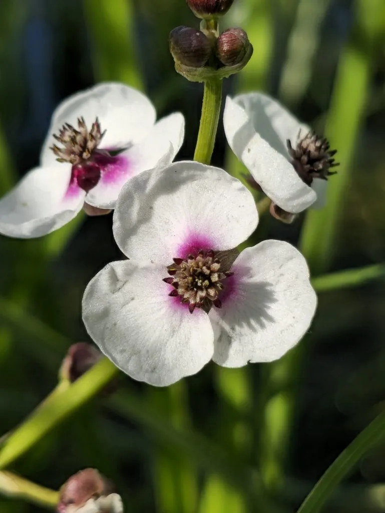

水生植物 · 植物界
慈姑 Sagittaria sagittifolia

泽泻科多年生水生草本，叶片箭形，地下球茎可食，口感粉糯微苦，是江南“水八仙”之一，原产欧亚大陆。
- 分类
- 门被子植物门纲木兰纲目泽泻目科泽泻科属慈姑属
- 栖息环境
- 池塘、水田、沼泽等浅水处，喜温暖、阳光充足
- 地理分布
- 原产欧亚大陆，中国长江以南水乡广泛栽培
- 保护级别
- 暂无评估
物种志
慈姑为泽泻科慈姑属多年生水生草本，株高 0.5–1.2 米，地下具匍匐根状茎，末端膨大成球茎。沉水叶线形，浮水叶和挺水叶箭形，先端尖、基部裂成两片。花单性，白色，花瓣 3 枚，组成圆锥花序，花期 6–8 月；果实为瘦果。
慈姑原产欧亚大陆，中国各地池塘、水田和沼泽常见，长江以南栽培较多，喜温暖、阳光充足和浅水环境。它地下膨大的球茎是主要食用部分，富含淀粉，口感粉糯、略带苦味，可煮食、炒菜或制淀粉，是江南“水八仙”之一。慈姑的箭形叶片挺拔美观，也可作水景布置；栽培以球茎种植为主，生长期保持浅水，秋季地上部分枯黄后即可采收球茎。
形态与习性
- 株高0.5–1.2 米，挺水生长
- 花期6–8 月，花白色，3 瓣
- 果期花后结瘦果
- 光照喜充足阳光
- 水分浅水，水深 10–30 厘米
- 土壤肥沃的水田淤泥
- 繁殖以球茎种植为主
- 主要用途球茎食用（水生蔬菜）、水景布置
趣味知识
- 慈姑叶片呈箭形，学名种加词意为“箭形叶”。
- 它地下膨大的球茎富含淀粉，是江南“水八仙”之一。
- 慈姑球茎口感粉糯、略带苦味，可煮食或制淀粉。
- 慈姑靠球茎繁殖，栽培时把球茎埋入水田淤泥即可。